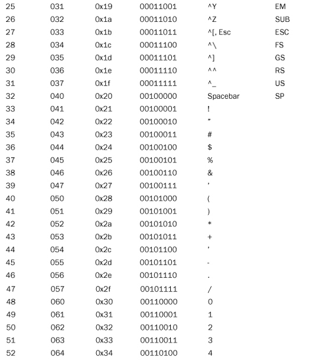
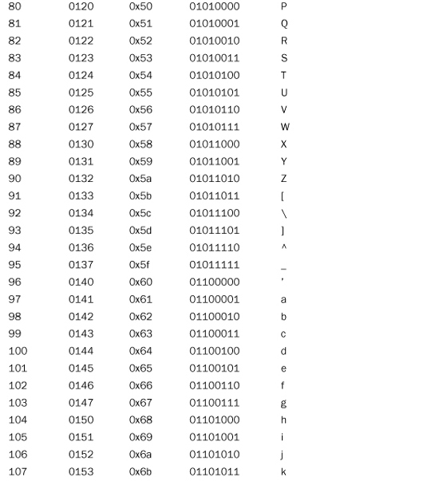

Computers store characters by using numeric codes. The ASCII (American Standard Code for Information Interchange) code is the most commonly used code in the United States. It’s also a subset (a very small subset) of Unicode. C++ lets you represent most single characters directly by including the character in single quotation marks, as in 'A' for the A character. You can also represent a single character by using the octal or hex code preceded by a backslash; for example, '\012' and '\0xa' both represent the linefeed (LF) character. Such escape sequences can also be part of a string, as in "Hello,\012my dear".
Table C.1 shows the ASCII character set in various representations. When used as a prefix in the table, the ^ character denotes using the Ctrl key.
Table C.1. ASCII Character Set Representations

